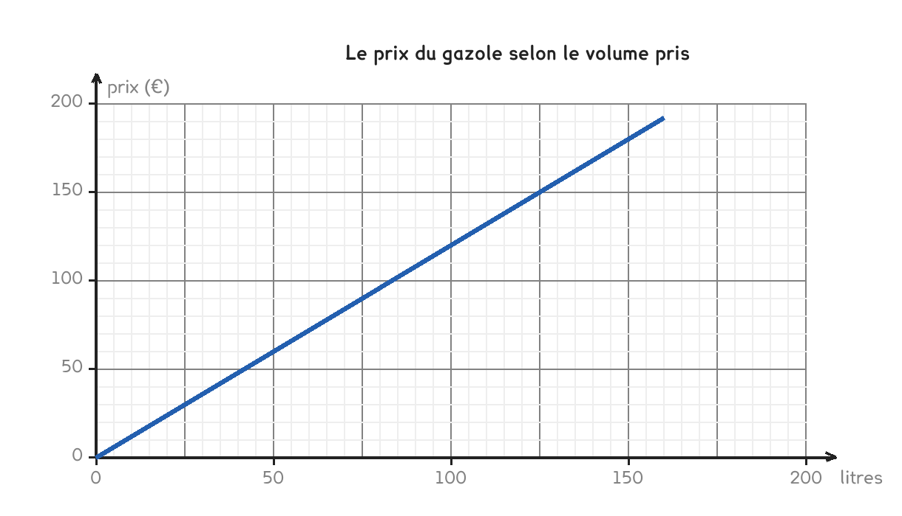

CAP · consolidation maths
Deux axes, une droite, et une réponse qu'on obtient sans calculer. Encore faut-il savoir ce que mesure chaque axe.
4 questions · 6 exercices · 1 repli · 1 figure
Savoirs travaillés

Un graphique se lit dans les deux sens. Du bas vers la gauche pour trouver un prix, de la gauche vers le bas pour trouver un volume. C’est la même droite, et le même geste à l’envers.
Pour 50 litres : je monte depuis 50 sur l’axe du bas, j’atteins la droite, et je lis 60 € sur l’axe de gauche.
On lit le mauvais axe. Un nombre lu sur l’axe du bas est un volume, pas un prix — même quand il « ressemble » à un prix. L’unité écrite au bout de l’axe est la seule chose qui tranche, et c’est pour ça qu’on la relit avant d’écrire.
Pour aller plus loin
Pour zéro litre, on paie zéro euro : le point (0 ; 0) est sur la droite. C’est ce qui rend la situation proportionnelle, exactement comme au tableau de la fiche 15.
Le coefficient se lit directement sur le graphique : c’est le prix d’un litre, soit la hauteur atteinte pour une unité en abscisse. Ici 1,20 €.
Si le fournisseur ajoutait des frais de livraison, la droite partirait au-dessus de zéro — et on retomberait sur la situation de la fiche 17, celle qui n’est pas proportionnelle.
Le chef de chantier prend du gazole pour trois engins. Répondez par lecture graphique, sans calculer.
Exercice · SP
Combien coûtent 50 litres ?
Exercice · SP
Combien coûtent 125 litres ?
Exercice · SP
Quel volume obtient-on avec 96 € ?
Exercice · AA
Quel est le prix d’un seul litre ?
Deux questions que le graphique ne sait pas résoudre seul.
Exercice · AA
Le graphique s’arrête à 200 litres. Combien coûteraient 350 litres ?
Exercice · AA
Le gazole augmente de 5 %. Combien coûteront alors 200 litres ?
Fiche de consolidation. Aucun corrigé ; rien n'est enregistré, rien n'est noté.